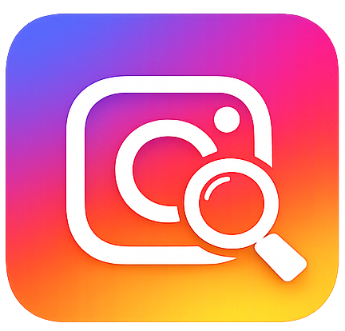

IG MutualCheckEffective date: June 20, 2026
IG MutualCheck ("the Extension") is an open-source Chrome extension that helps users identify Instagram accounts they follow that do not follow them back. This policy explains what data the Extension accesses, how it is handled, and what is stored.
When you run an analysis, the Extension reads the following information from your authenticated Instagram session:
This data is retrieved directly from Instagram's API using the session cookies already present in your browser. The Extension does not ask for your Instagram password.
All data processing happens locally in your browser. The Extension compares your followers and following lists inside the browser tab and displays the results in a panel on the page. No data is sent to any external server, third-party service, or analytics platform.
The Extension uses the chrome.storage.local API to store a single preference:
No Instagram data (usernames, followers, following lists, or analysis results) is persisted in local storage. Results exist only in memory while the panel is open and are discarded when the panel is closed or the page is reloaded.
You may choose to export analysis results as CSV or JSON files or copy them to the clipboard. These exports are generated locally in your browser and saved to your device. The Extension does not upload or transmit exported data.
The Extension does not integrate with any third-party service. It communicates only with Instagram's API (www.instagram.com) using your existing browser session.
The Extension is not directed at children under 13. It requires an existing Instagram account, which is subject to Instagram's own age requirements.
If this policy is updated, the new version will be published at this URL with an updated effective date. Continued use of the Extension after changes constitutes acceptance of the revised policy.
For questions about this privacy policy, open an issue on the GitHub repository.